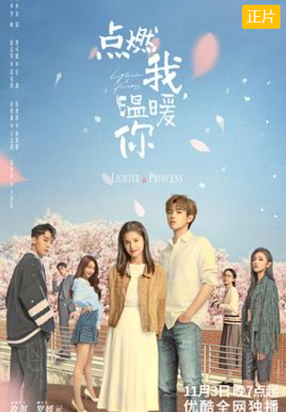
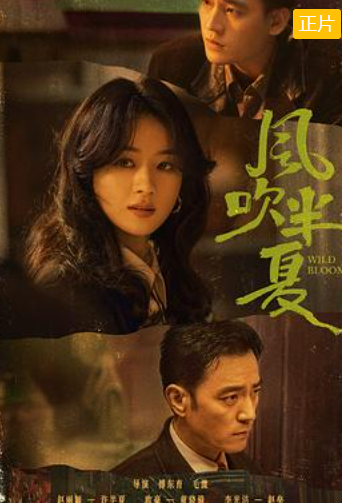
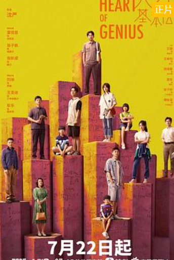
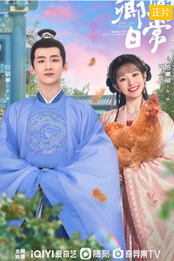
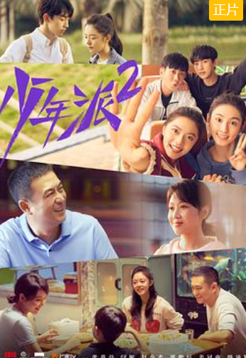
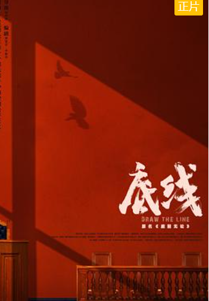
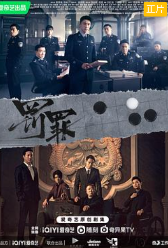

Top10人气排行榜
1
点燃我，温暖你
该剧改编自Twentine的同名小说。朱韵（张婧仪饰）刚开始大学生活，就被"坏小子"李峋（陈飞宇饰）的闯入 颠覆世界。被朱韵当成不学无术富家子的他，真实身分却是难得一见的编程天才。两人经过切磋后互相赏识，两人在一起赢得比赛后，萌生爱意、 ……
2
风吹半夏
该剧根据阿耐的小说《不得往生》改编，讲述了以许半夏为首的有志者怀抱雄心壮志在改革开放的大潮中，奔流涌动，积极探索，不断创新的故事 许半夏（赵丽颖 饰）与童骁骑（欧豪 饰）、陈宇宙（黄澄澄 饰）三人白手起家，最初以收废钢铁为业务，后逐步接触钢铁行业，开始周旋于大型 ……
3
天才基本法
该剧根据长洱同名小说改编，讲述了数学天才林兆生与女儿林朝夕、高智商少年裴之，在数学推理和双时空交互中寻找自我的故事 数学天才林兆生与女儿林朝夕、高智商少年裴之，在数学推理和双时空交互中寻找自我的故事林朝夕（张子枫饰）从哲学系毕业后生活并不如 意，她的内心埋藏着数学的种子，却由于长期仰视父亲老林（雷佳音饰）跟初恋裴之（张新成饰）两位数学天才，导致她并不自信，直到经历 ……
4
两个人的小森林
该剧讲述的是纯靠化妆技术维持精致外表的时尚博主虞美人，想要凭借美貌报复式地追求曾经拒绝她的 天才植物学教授庄羽，从校园追到田园，却在施展猎爱百计的过程中沦陷了，上演了一场甜蜜爆笑的爱情故事致力于黄花蒿培 育研究的植物学教授庄羽（张彬彬 饰）一心科研，对世俗名利和社交都漠不关心，这也无意中伤害了在多年前就对他有好感 ……
5
卿卿日常
该剧改编自多木木多的小说《清穿日常》，讲述了新川六少主尹峥与霁川少女李薇因意外结缘，共同开 启了一段状况百出却又相映成趣的生活故事因为一场联姻擢选，来自天南海北的女孩们齐聚新川。韬光养晦的新川六少主 尹峥，与只想努力落选、在老家安逸度日的李薇意外结缘，共同开启了一段状况百出却又相映成趣的新生活。随着尹峥开 ……
6
密室大逃脱第四季
节目邀请嘉宾进入不同主题故事置景内的"密室"演播室，每期通过不同的角色扮演，与节目中的 素人嘉宾进行多维度多元化的对抗，最终解除重重困难，逃出节目组搭建的密室空间《密室大逃脱第四季》邀请嘉宾 进入不同主题故事置景内的"密室"演播室，采取全未知、不限时的拍摄手法，每期通过角色扮演，进行益智力、创造 ……
7
少年派2
该剧讲述了大学毕业在即，四位昔日同窗好友林妙妙、钱三一、邓小琪、江天昊与家庭虽各 有困扰，但依旧努力前行的故事大学毕业在即，四个昔日同窗好友与他们的家庭虽各有困扰，但都在奔向幸福的 路上努力前行。林妙妙（赵今麦饰）临近毕业，在留学与择业之间举棋不定，但在父母与朋友的陪伴下，她勇往 ……
8
底线
该剧是首部由最高人民法院全程指导、全景展现我国司法改革最新成果的现实主义法治题材电视剧。讲述了新时代法治人在 司法道路上不断开拓，诠释人民法官使命担当的故事星城区人民法院立案庭庭长方远，与榕州市中级人民法院刑一庭副庭长宋羽霏同为星城区 人民法院副院长张伟民的徒弟，师徒三人将青春与热血都奉献给了中国的司法事业。而今，方远的徒弟兼法助周亦安也刚刚成为员额法官，曾 ……
9
进击的巨人第一季
《进击的巨人》（進撃の巨人），是日本漫画家谏山创创作的少年漫画作品，于2009年在讲谈社旗下的漫画杂志 《别册少年Magazine》上开始连载，至2021年4月9日完结。全139话艾伦亲眼看着人们以及自己的母亲被巨人吞食，怀着对巨人无法 形容的憎恨和痛恨，誓言杀死所有巨人。城墙崩坏的两年后，艾伦加入104期训练兵团学习和巨人战斗的技术。在训练兵团的三年，艾 ……
10
罚罪
该剧通过青年刑警常征的视角，讲述了两代公安干警为维护一方安宁、扫除犯罪团伙，不畏艰险、前赴后继铲 除盘踞一方的犯罪团伙的故事在昌武（虚构地）这座小城，在危机重重的战斗第一线，刑侦大队副大队长常征因长期追查实力雄厚 ……